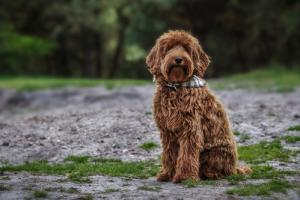

De hond is middelgroot tot groot en houdt qua uiterlijk het midden tussen de gebruikte oorspronkelijke twee rassen.
Vacht
Hij komt voor in verschillende kleurvariëteiten zoals wit, rood, bruin, zwart, zilver-, karamel- en goudkleurig. Ook de textuur van de vacht kan sterk verschillen. Sommige labradoodles hebben bijvoorbeeld krullen, terwijl andere lange sluikharen hebben, of kortharig zijn.
Hoofd
Het hoofd is breed met welgevormde wenkbrauwen. De snuit is korter dan de hersenschedel.
Grootte
Labradoodles kunnen zeer verschillende afmetingen hebben omdat er nog geen uniformiteit van fokpraktijk en consensus over fokrichting bestaat.
De schofthoogte van een labradoodle kan sterk variëren van hond tot hond, maar over het algemeen is de hond ergens tussen de 60cm en 65cm hoog. Een volwassen reu kan ergens tussen de 25kg en de 35kg wegen, en een teef tussen de 20kg en de 27kg.
Hoofd
Het hoofd is breed met welgevormde wenkbrauwen. De snuit is korter dan de hersenschedel.
Ogen
De labradoodle heeft grote, levendige, ovale ogen.
Staart
De staartaanzet begint vrij laag. De staart zelf wordt vaak krom omhoog gedragen.
Aard
De labradoodle is een hond met een vrolijk karakter en met een enorme "will to please". Ze kunnen de emoties van hun baas goed aanvoelen, een kwaliteit dat hun erg geschikt maakt als therapiehond.
oorsprong
Gebruiksdoel
De labradoodle werd oorspronkelijk gefokt om te dienen als hypoallergene assistentiehond.
Geschiedenis
De Australiër Wally Conron is de geestelijke vader van de labradoodle, hoewel hij in recente interviews aangeeft daar niet meer zo trots op te zijn.
Conron, een fokker van de Royal Victorian Guide Dogs Association, kruiste voor het eerst een poedel met een labrador in 1989. Zijn doel was om de een hond te creëren die de vachtstructuur heeft van een poedel en de "will to please" van de labrador retriever. Het was ook Conron die de naam labradoodle bedacht heeft.
De inspiratie voor deze kruising kwam van een Hawaiäans koppel die Wally Conron eind jaren '80 hebben gevraagd om voor hun een hulphond te fokken die bij hun zouden passen. De vrouw van het koppel was namelijk slechtziend en had een blindengeleidehond nodig, maar haar echtgenoot was allergisch aan de meeste honden.
gezondheid
Meest voorkomende gezondheidsproblemen
Aangezien de labradoodle geen echt hondenras is, is het moeilijk te voorspellen welke gezondheidsproblemen er kunnen opduiken bij deze honden. Bij rashonden kan men dit meestal nagaan via de stamboom en de bloedlijnen. Dit is meestal niet mogelijk bij de labradoodle, daarom wordt er meestal vanuit gegaan dat deze honden dezelfde ziektes en gebreken kunnen hebben van zowel de poedel alsook de labrador retriever.
Levensverwachting
Een gezonde labradoodle wordt ongeveer 14 jaar oud.
omgang
Verzorging
De vacht van de labradoodle vraagt enige tijd en aandacht, ongeacht of de hond krullen heeft of niet. Het wordt aangeraden de vacht wekelijks tot dagelijks te borstelen, afhankelijk van de lengte en de textuur. Hierbij besteedt men best extra aandacht aan de plaatsen op het lichaam waar er veel wrijving is zoals: de oksels, de lies en achter de oren. Op deze plaatsen ontstaan gemakkelijk klitten in het haar. Net zoals bij de poedel kan het zijn dat de vacht van deze hond onophoudelijk blijft groeien. Daarom gaan vele labradoodles ook om de 8 à 12 weken naar een hondenkapsalon om de vacht bij te knippen. Sommige eigenaars opteren om de vacht te laten afscheren door de trimmer, terwijl andere liever een mooi kapsel laten knippen. Sommige labradoodles mogen echter niet geschoren worden omdat hun vachtstructuur dat niet toelaat. Men vraagt dus best eerst advies aan de hondentrimmer vooraleer men een beslissing neemt over wat te doen met de vacht.
Opvoeding
In het algemeen is de labradoodle een erg aangename huishond die erg intelligent is met een enorme "will to please". Door zijn intelligentie is deze kruising makkelijk te trainen, maar heeft deze ook een consequente opvoeding nodig anders kan het een vervelende hond worden.
Activiteiten
Zoals al eerder vermeld zijn labradoodles erg energieke, intelligente en veelzijdige honden. Dit maakt hun erg geschikt voor de volgende activiteiten:
• Agility
• Dock diving
• Dogdance
• Frisbee
• Gehoorzaamheid
• Zwemmen
Controverse
Hypoallergeen
De labradoodle heeft zijn populariteit mede te danken aan dat deze kruising geadverteerd wordt als een hypoallergene hond en dus ideaal is voor mensen die normaal allergisch zijn aan honden. Hier bestaat in de kynologie echter veel onenigheid over of dit wel klopt. Allergenen, zoals eiwitten uit de vacht, huidschilfers en speeksel, veroorzaken na inademing allergische klachten. Het idee is dat honden zoals labradoodles minder of geen allergenen uitscheiden
dit is een labradoodle met een cream vacht:
dit is een labradoodle met een caramel vacht:
dit is een labradoodle met een apricot vacht:

dit is een labradoodle met een chocolade vacht:
tabel
Verschillen ''gewone'' en de Australian labradoodle
Wij geven u hier het officiële fokschema van de Australian labradoodle en geven u aan waar de ''gewone'' labradoodle stopt en de Australian labradoodle verder gaat in ontwikkeling. De eerste keer dat u dit leest zal het wellicht duizelen vanwege de verschillende coderingen, de 2e keer zal het al snel duidelijk worden dat de verschillen tussen de labradoodles groot zijn. Het is een technisch verhaal maar geheel conform de richtlijnen van de Australian Labradoodle Association.
Definities
AL Australian Labradoodle
ALF Australian Labradoodle Foundation Dog -> soort voorloper
ALF0 Australian Labradoodle basis fokhonden
LO Kruising Labrador x Poedel (ook wel aangeduid als F1/F1B/F2 labradoodle)
S Kruising Cocker Spaniel x Poedel (ook wel Spoodle genoemd)
Basishonden:
L Labrador
P Poedel
C Cocker Spaniel
ALF1 = Eerste generatie labradoodle
Nu we de codes kennen kunnen we gaan kruisen. Vanzelfsprekend zijn hier regels voor opgesteld. Wij zullen deze hier bespreken en toelichten: